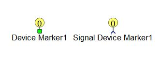
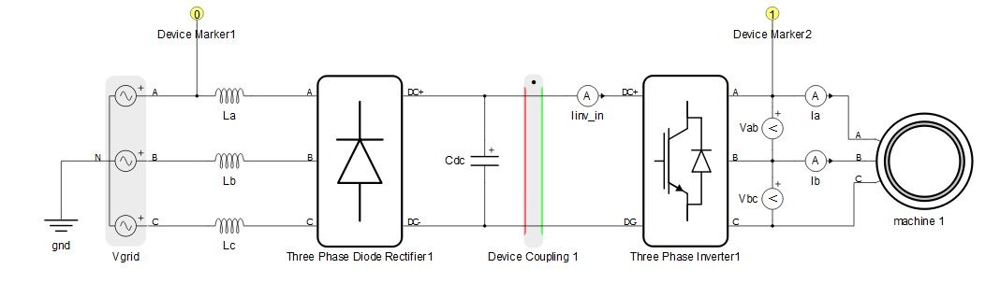

Device Marker
Description of the Device Marker and Signal Device Marker components in Schematic Editor

There are two types of device markers available: the signal device marker and the electrical device marker. Their functionality is the same, the only difference is where they can be connected. Signal device markers are connected to the signal processing part of the model, while electrical device markers are connected to electrical part of the circuit.
 In TyphoonSim, there are no multiple cores or devices, everything
is simulated on a single core (PC) and no HIL device is used, thus preventing the need to
use Device marker component for model partitioning purposes. However, this component
is not ignored. If a device coupling component is present in the model, Device marker
must be configured properly as it would for real-time/VHIL simulation, even though the
device coupling components are fully or partially ignored.
In TyphoonSim, there are no multiple cores or devices, everything
is simulated on a single core (PC) and no HIL device is used, thus preventing the need to
use Device marker component for model partitioning purposes. However, this component
is not ignored. If a device coupling component is present in the model, Device marker
must be configured properly as it would for real-time/VHIL simulation, even though the
device coupling components are fully or partially ignored.
Device markers are used only in multiple HIL configurations (systems with more than one HIL device connected through a high speed serial link). Device markers are used to specify which part of the entire circuit is going to be emulated on which of the HIL devices in the system. The maximum number of HIL devices connected together is dependent on the type of HIL devices being connected, as shown in Table 1.
| Parameter | HIL101 | HIL404 | HIL602+ | HIL604 | HIL506 | HIL606 | VHIL+ |
|---|---|---|---|---|---|---|---|
| Maximum number of devices in the chain | 4 | 4 | 4 | 16 | 16 | 16 | 16 |
Configurations of individual HILs connected in parallel can be different, which can be set in properties window of device markers. Other factors may limit the maximum number of variables and streams you can send across devices. For more details regarding HIL paralleling and multi-HIL systems, please refer to the HIL paralleling guide.
HW settings (Tab)
- HIL Device ID
- Defines in which device the marked part of the circuit is going to be compiled. The ID values available in the HIL Device ID combo box depend on the Device property value in Model Settings. Maximum numbers of devices in chain are displayed in Table 1 table.
- Override global HW settings
- If enabled, globally set HW configuration ID will be overriden by HW configuration ID set in device marker.
- HIL device
- Available if Override global HW settings is enabled.
- Choose HIL device type.
- Hardware configuration id
- Available if Override global HW settings is enabled.
- Hardware configuration ID local to the HIL.
Circuit Solver settings (Tab)
Circuit solver settings are set globally via Model settings, but they can be overriden for each device in a multi-HIL system. This is done by checking the checkbox Override global solver settings property.
- Override global solver settings
- If enabled, overrides the global solver settings for the marked HIL in a multi-HIL system.
- Discretization method
- Available if Override global solver settings is enabled.
- Determines discretization method for state space equations of the model.
- Simulation step
- Available if Override global solver settings is enabled.
- Simulation step of the electrical part of the model.
- Calculation method
- Available if Override global solver settings is enabled.
- Determines which algorithm for state space matrix calculation is used.
- There are two available algorithms - systematic elimination and constraint matrix. By default systematic elimination is used. In some extraordinary cases, constraint matrix algorithm is required.
- Enhance stability
- Available if Override global solver settings is enabled.
- If enabled, cancels out positive poles of the system due to numerical calculation error, which ensures stability during long simulation runtimes.
- Enable GDS oversampling
- Available if Override global solver settings is enabled.
- Digital inputs are oversampled by default. For more information, please refer to the GDS oversampling documentation.
- Show modes
- Available if Override global solver settings is enabled.
- Digital inputs are oversampled by default. For more information, please refer to the GDS oversampling documentation.
Signal Processing settings (Tab)
Signal processing settings are set globally via Schematic settings, but they can be overriden for each device in a multi-HIL system. This is done by checking the checkboxes Override global solver settings or Override global user SP settings.
- Override global user SP settings
- If enabled, overrides global settings for user signal processing part of the model.
- Compiler optimization level
- Available if Override global user SP settings is enabled.
- Determines optimization level of the compiled binary. High optimization ensures the smallest code size and fastest execution time, while no optimization ensures the most model stability
- Place code section in
- Available if Override global user SP settings is enabled.
- Determines memory selection for the code program sections - internal or external memory.
- Place data section in
- Available if Override global user SP settings is enabled.
- Determines memory selection for the data program sections - internal or external memory.
- Override global system SP settings
- If enabled, overrides global settings for user signal processing part of the model.
- Compiler optimization level
- Available if Override global system SP settings is enabled.
- Determines optimization level of the compiled binary. High optimization ensures the smallest code size and fastest execution time, while no optimization ensures the most model stability
- Execution rate 1
- Available if Override global system SP settings is enabled.
- Specifies fast execution rate for system signal processing components.
- Execution rate 2
- Available if Override global system SP settings is enabled.
- Specifies slow execution rate for system signal processing components.
An example of a HIL marker use case is shown in Figure 2. Device coupling is used to divide the full circuit into two separate circuits that should be emulated on two separate HIL devices. Device markers are used to define which part is emulated on which HIL. The rectifier part is marked with a marker set to ID=0, meaning that it is going to be emulated on the HIL with ID0. The inverter and machine part of the circuit is marked with a marker set to ID=1, so it is going to be emulated on the HIL with ID1.
